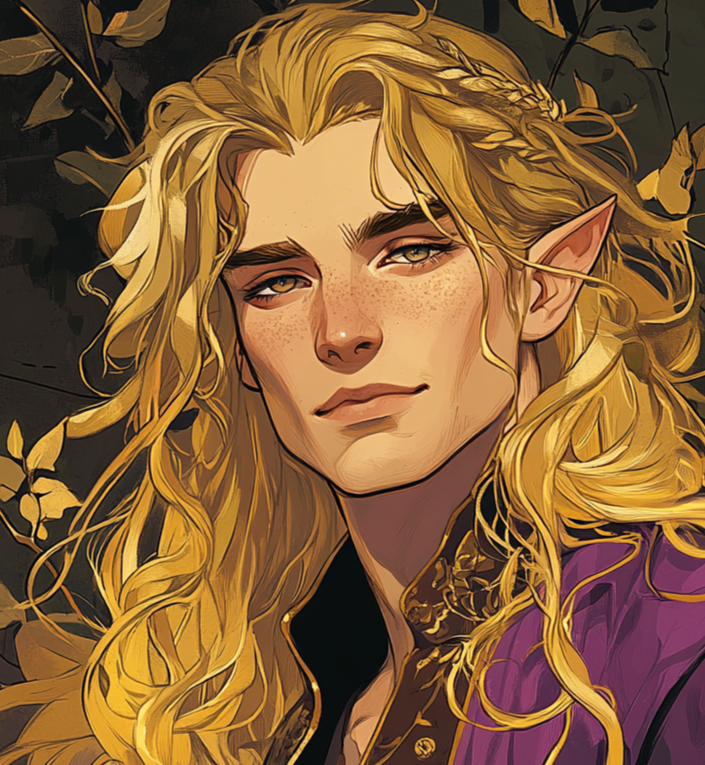

| DAYLOR |
|

|
| Race: |
Elf |
| Age: |
? |
| Height: |
? |
| Faction: |
Free Kingdoms |
| Occupation: |
Prince |
| Connections: |
House of Naos |
Daylor
Daylor is the second son of Naos, a prince by blood but a wanderer by spirit. Where Ilphas shoulders the weight of the crown, Daylor slips out from under it with a grin and a wink, choosing flirtation over formality and pleasure over protocol.
He flirts shamelessly with men, with women, with danger itself, and has no interest in marriage or alliances. He lives for the thrill of the moment, for candlelit dances and whispered promises in the dark. Yet for all his revelry, Daylor is no fool. Behind the charm is a sharp mind and a deep knowledge of magic, one of only two in his family born with such a gift.
His magic is not instinctive like Velaris’s druidic bond. Daylor studied, practised, and refined his craft in secret halls and forgotten tomes. In Naos, magic is watched carefully and feared by some, but his royal blood shields him from scrutiny. He uses that privilege freely, often crossing into the more shadowed corners of the kingdom where magic and temptation flow more easily.
Though he has no desire for the throne or any of the duties that come with his blood, Daylor is not without loyalty. He loves his siblings in his way—messy, teasing, protective. And while he may never kneel to duty, he’ll rise for those he loves if ever they truly need him.